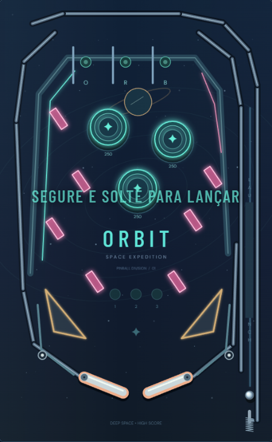

CRIADOR DE JOGOS & CONTEÚDO
Ideias que
viram jogo.
Oi, eu sou o Arthur. Este é meu espaço para criar, experimentar e compartilhar. Escolha um jogo e vem explorar esse universo comigo.
É só dar play. Direto no seu navegador.

01 / MEU PORTFÓLIO
Pequenos mundos.
Grandes partidas.
Da primeira ideia ao último detalhe.
Explore os jogos que eu criei.
O próximo jogo começa com uma ideia.
CONTINUE EXPLORANDO ↗Este portfólio está só começando. Novos mundos vêm por aí.
02 / DO OUTRO LADO DA TELA
O play continua
no YouTube
@pixelzinho11Pra quem também
Pra quem também
gosta de dar play.
Meu espaço no YouTube. Acompanhe o Pixelzinho e fique por perto para os próximos vídeos.
Conhecer o Pixelzinho (abre em nova aba)Os primeiros vídeos vão aparecer por aqui.03 / QUEM ESTÁ NO CONTROLE
Arthur Tavares.
Sempre criando.
Gosto de transformar ideias em jogos e compartilhar o que crio. Aqui, reúno meus projetos e meu canal, o Pixelzinho.
Entre uma partida e outra, este espaço vai ganhando novos experimentos. Sinta-se em casa, explore e divirta-se.
SUA PRÓXIMA PARTIDA ESTÁ AQUI